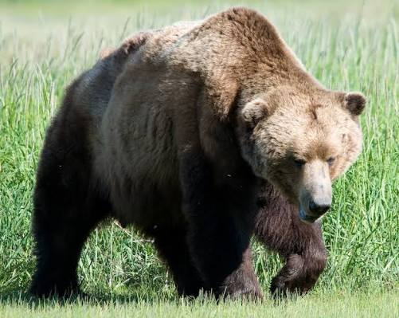
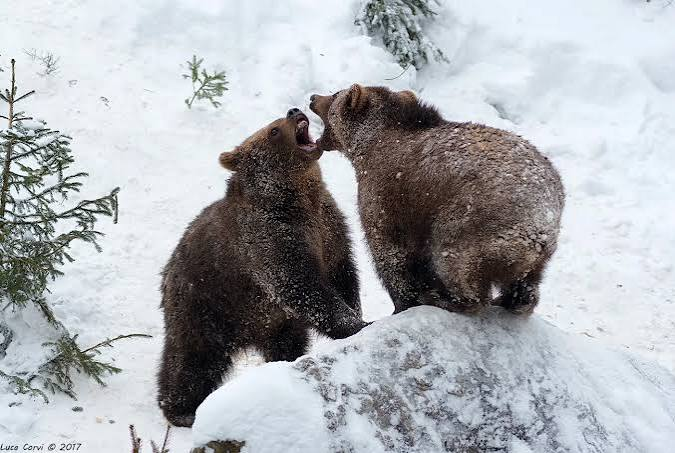

Цей звір є найвідомішим видом своєї родини, одним з
найбільших наземних хижаків у світі й найбільшим хижаком фауни України.
Вигляд бурого ведмедя типовий для ведмедів узагалі. У нього міцний кремезний тулуб
із високою холкою, масивна голова з невеликими вухами та очима. Хвіст короткий
(6,5—21 см), часто повністю прихований у шерсті. Лапи міцні, з великими невтяжними
кігтями довжиною 8—15 см, п'ятипалі, стопоходячі. Шерсть густа, зазвичай забарвлена рівномірно або
з деяким потемнінням основного кольору на морді та лапах. Забарвлення бурого ведмедя загалом варіює
у широкому діапазоні: від світло-палевого до майже чорного; але найзвичайнішою є буро-коричнева форма.
У гризлі зі Скелястих гір (США) шерсть на спині може бути світлішою на
кінцях, створюючи враження сірого або сивого відтінку. Цілком сивувато-сіре забарвлення характерне
для бурих ведмедів в Гімалаях та на Тянь-Шані, а рудувате — на
території Сирії. У ведмежат на шиї та грудях бувають
світлі відмітини, котрі з віком зникають.

Попри те, що бурий ведмідь належить до хижаків, полюванням великої здобичі — лосів, кабанів, оленів — займаються